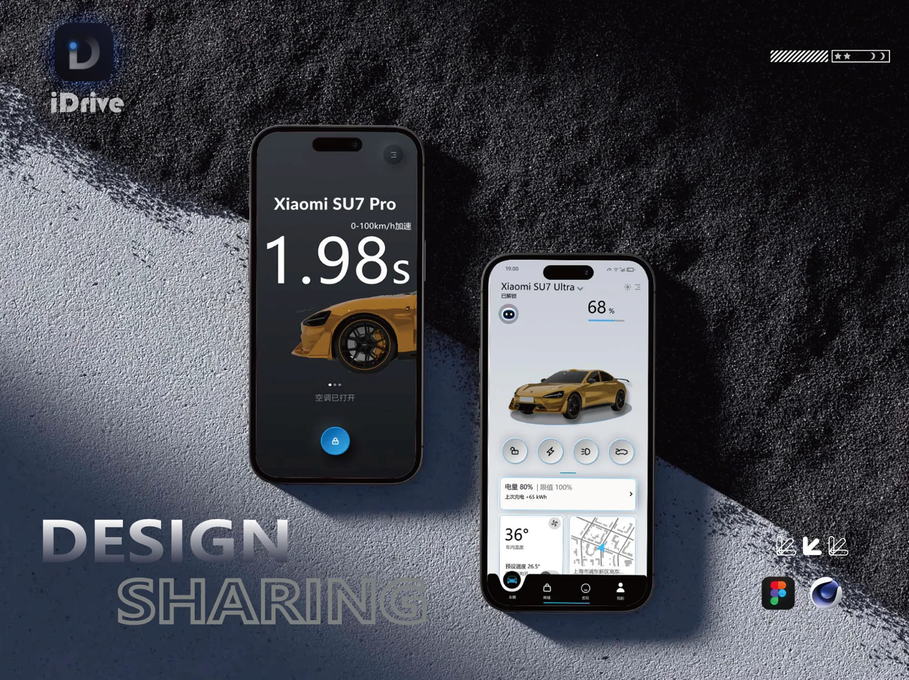
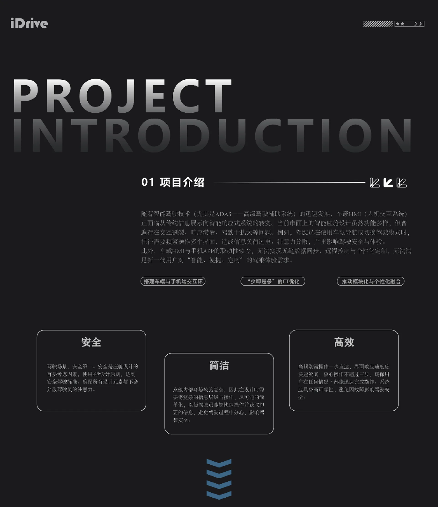
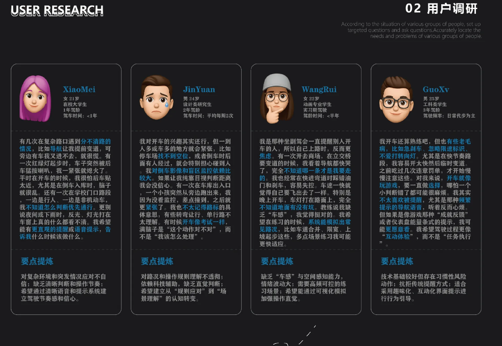
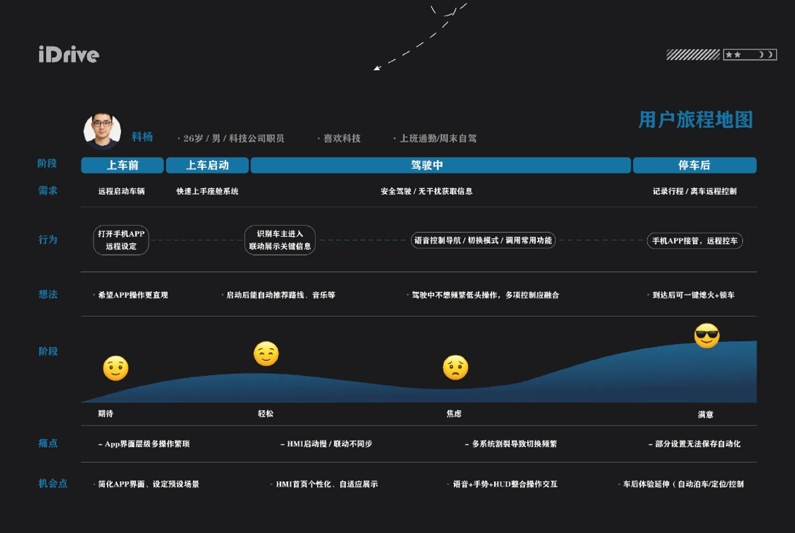
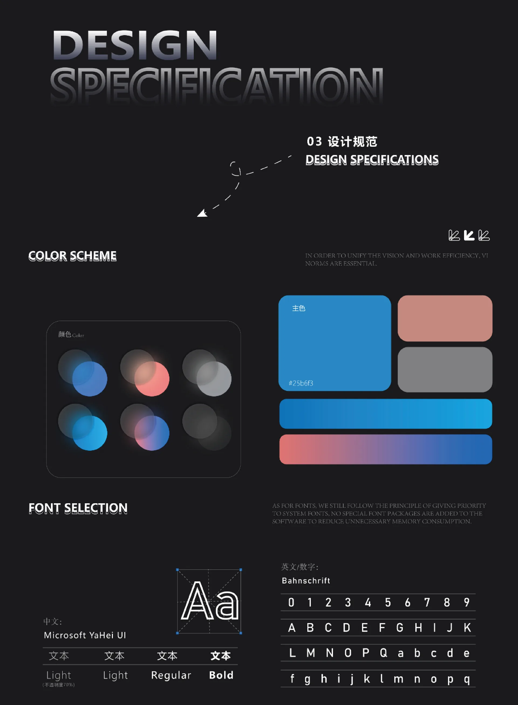
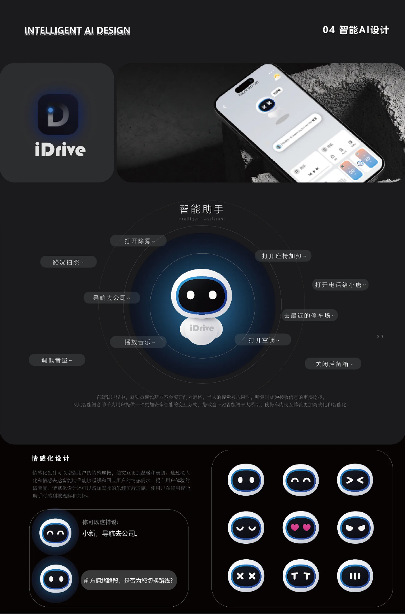
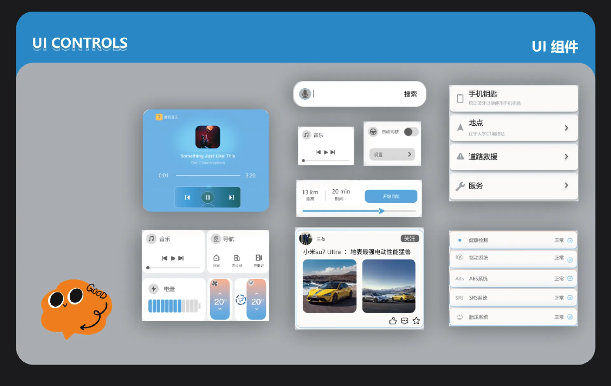
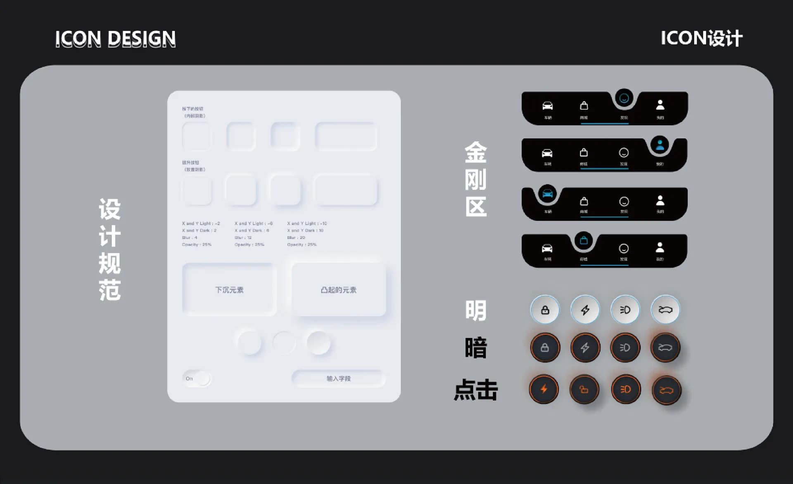
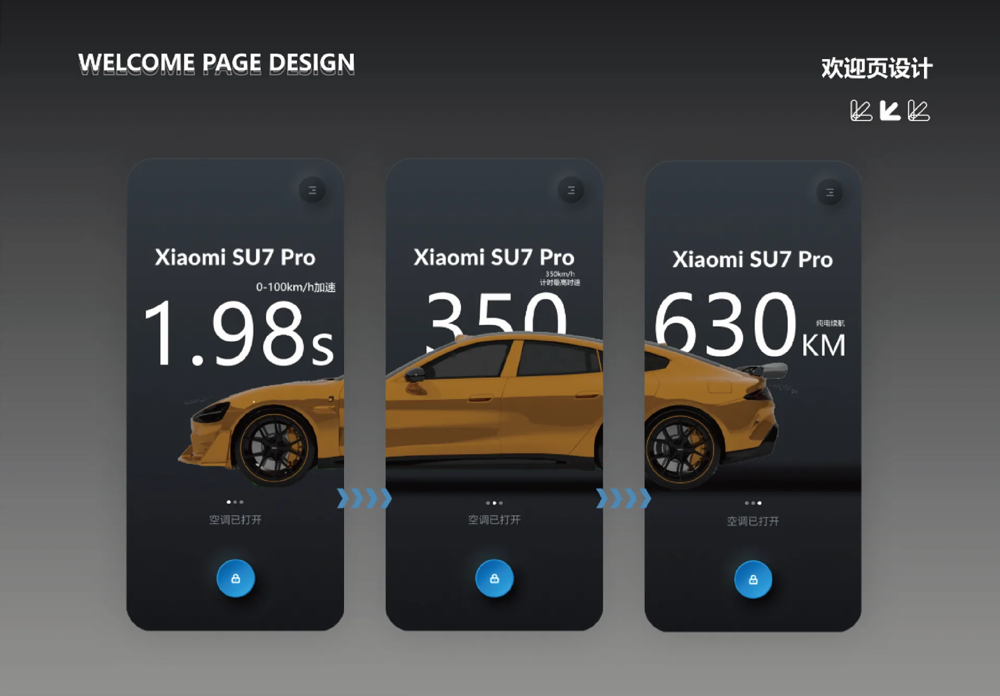

iDrive・车与手机无缝互联,一键掌控智能出行。
本项目是一款面向智能电动车用户的车机互联应用,打造集车辆状态监控、远程控制、出行管理于一体的智能出行助手。APP 采用简洁科技风 UI,通过数据可视化展示车辆性能参数、电池状态与实时车况，同时支持远程解锁、空调预控、充电管理等核心功能。项目以 “车与手机无缝连接” 为核心设计理念，旨在为用户提供高效、直观、便捷的智能出行管理体验，让科技服务于每一次出行。








